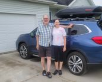

I recently visited Pikes Peak. This trip was awesome. I am standing at the top in 45 degrees while it is 90 degrees down in Colorado Springs. I am wearing short, but I managed to find a jacket in the car. I am at 14,115 feet of elevation.

Epic Summer Roadtrip 2021!
This is my sister Diane and I posing for picture signifying the beginning of an amazing road trip West in June of 2021. We are planning to stop in Omaha, then Colorado for a wedding, visiting as many CO national parks I can, then finally back in Omaha for the the 4th of July. Nebraskans know how to throw a 4th of July party.
Never Thought a Gas Station Would be so Popular
It has became a tradition when I travel West to see my daughter in Omaha to stop at a Kum & Go for souveneirs. I have friends in Michigan from Nebraska who also love to get coffee cups and T-Shirts from home. This is me loading up.
Visit to Arches National Park
I visited Arches National Park this summer and it was a blast. There were too many pictures to choose from. This is me posing with the inconic Delicate Arch in the background. This is the largest free standing arch in the park out of over 2000 arches. I would love to go back and see more.